Références
Captures prises par moi · aucune image fournie par un tiers
-
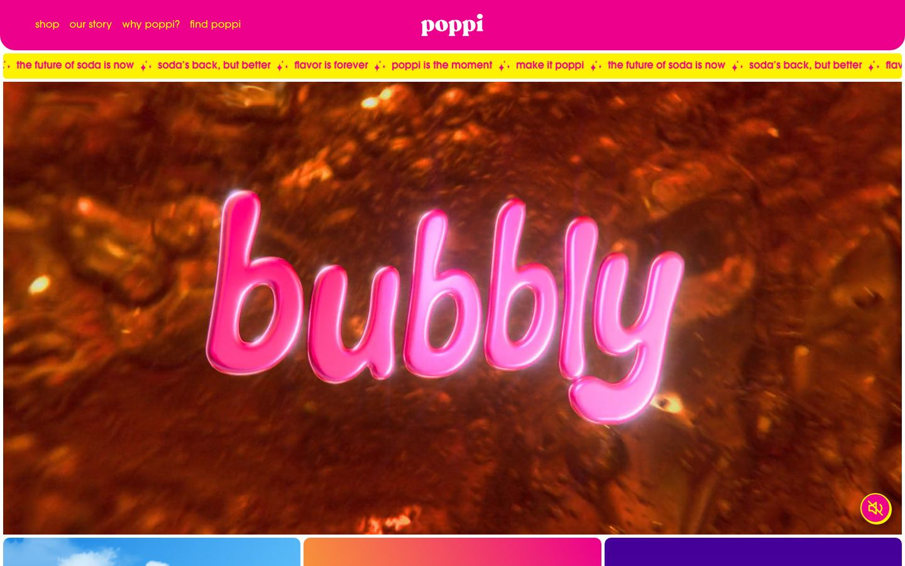
poppi
drinkpoppi.comsodavidéo de fondbandeau défilant
- Typo
- Un seul mot, « bubbly », en lettrage 3D gonflé et brillant, intégré à la vidéo.
- Couleur
- Fuchsia, jaune et ambre pétillant : trois couleurs, aucune neutre.
- Motion
- Une vidéo de fond (1 élément <video> mesuré) et un bandeau de slogans qui défile sous l'en-tête.
- À garder
- La macro de bulles comme décor, et le mot unique en volume.
-
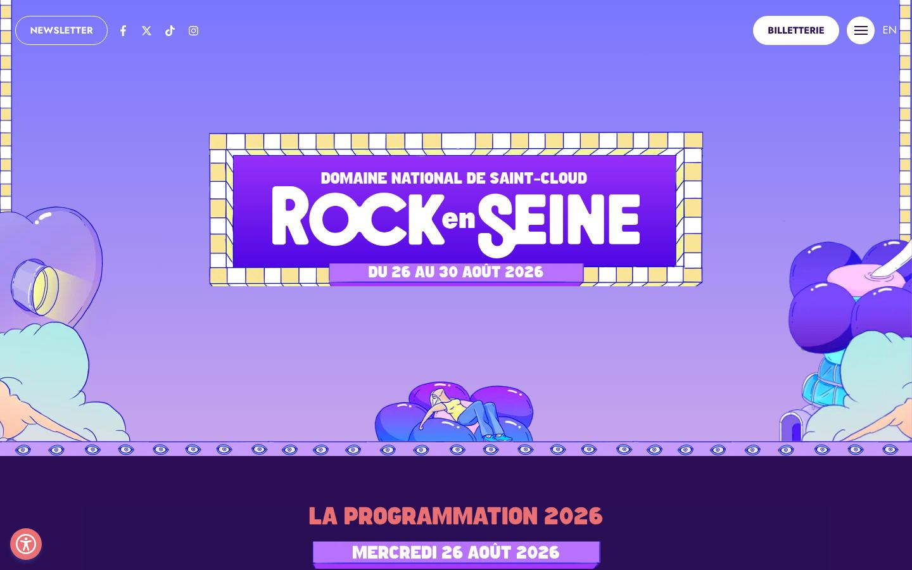
Rock en Seine
rockenseine.comfestivalLenis39 animations CSS
- Typo
- Logo en cartouche à damier, capitales grasses (Jost).
- Couleur
- Lavande, violet, crème.
- Motion
- Défilement lissé (Lenis) et 39 animations CSS actives au chargement.
- À garder
- Les objets gonflables façon jouet : festif sans être vulgaire.
-
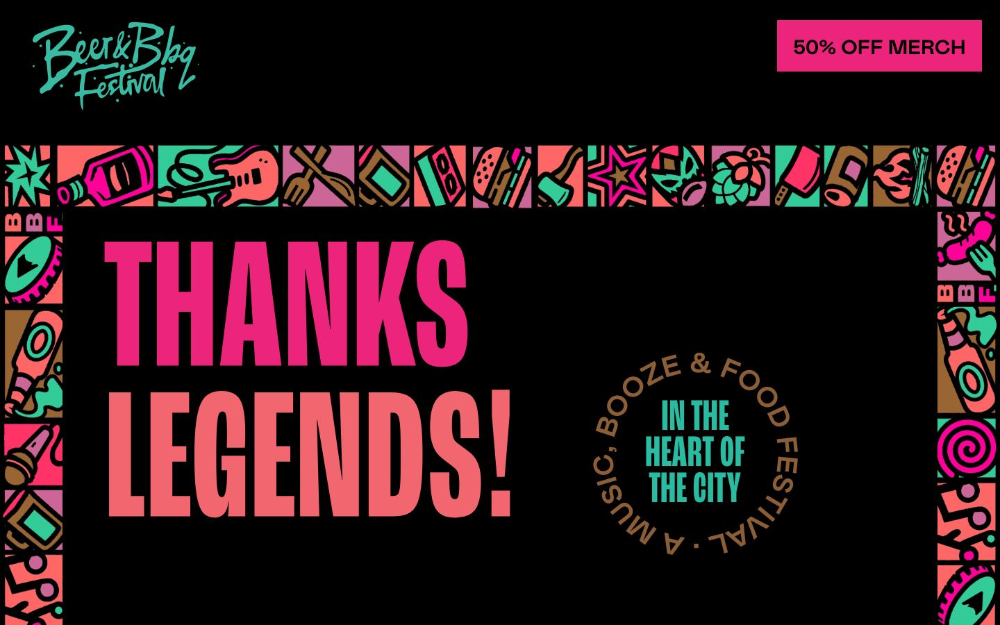
Beer & BBQ Festival
beerbbqfest.com.aufestival bièrelisté sur Awwwards
- Typo
- Condensé capitales géant rose corail, logo en script.
- Composition
- Message encadré par une bordure de pictos (chope, flamme, guitare).
- Finition
- Badge à texte circulaire « Booze & food festival ».
- À garder
- Le cadre de motifs : il dit « fête » avant qu'on lise un mot.
-
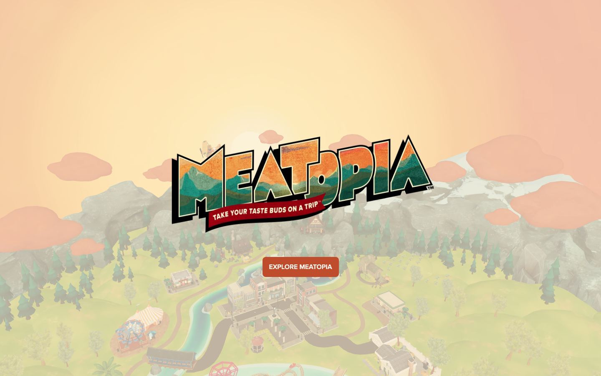
Meatopia
visitmeatopia.comAwwwards HM · 18/08/2026canvas 3D
- Typo
- Logo en volume, façon enseigne de foire.
- Motion
- Une scène 3D rendue dans un <canvas> : un monde miniature à explorer.
- À garder
- Le « monde » du festival comme navigation : piste pour le Palmarès.
-
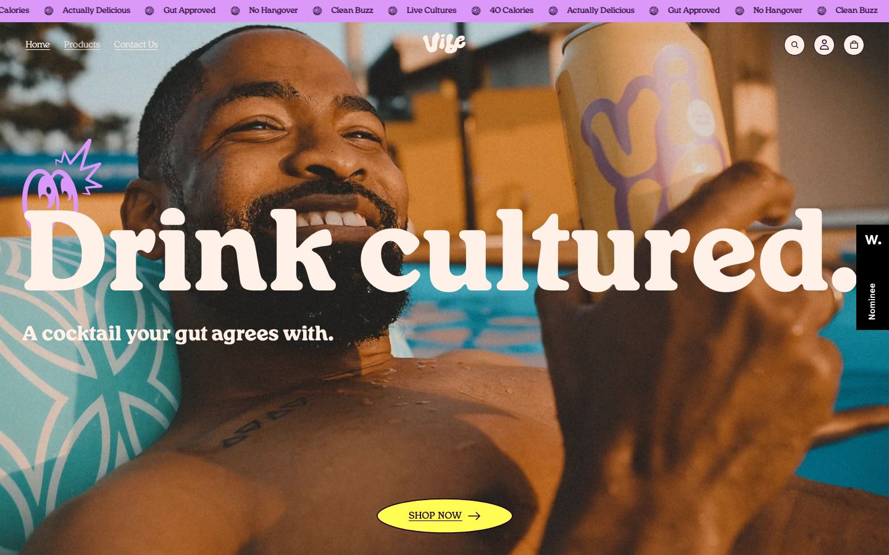
Vibe
vibebevvy.comAwwwards HM · 25/09/2026Leniscanvas
- Typo
- Serif display très grasse (VC Henrietta) et Space Mono pour le détail.
- Composition
- Titre géant posé sur une photo plein cadre, CTA pilule jaune.
- À garder
- L'énergie de la photo de convives, pas du produit seul.
-
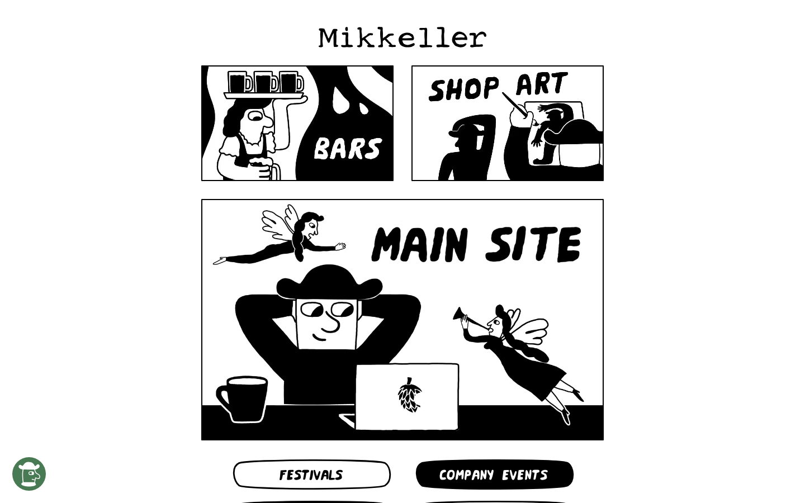
Mikkeller
mikkeller.combrasserieWebflow3 vidéos
- Typo
- Lettrage BD et polices maison (Mikkeller Special Brew, Mikkelwind).
- Couleur
- Noir et blanc pur.
- À garder
- La navigation dessinée en cases, et la preuve qu'une brasserie peut rester drôle en monochrome.
-
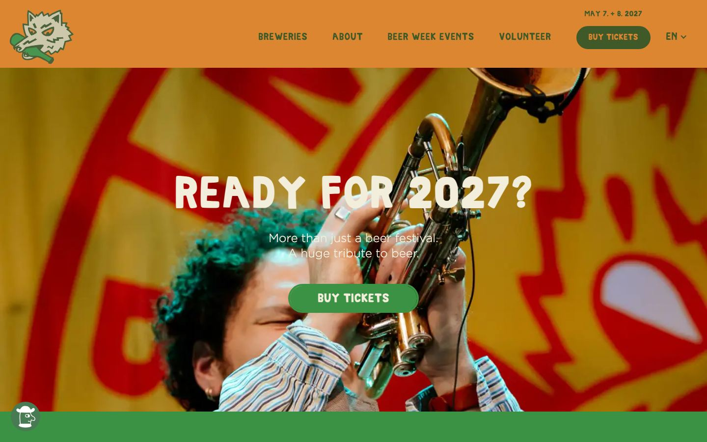
Mikkeller Beer Celebration
mbcc.mikkeller.comfestival bièreWebflow
- Typo
- Capitales maison (Mbcc 2022 Final) et Poppins.
- Couleur
- Orange, rouge, vert franc.
- À garder
- Festival bière = musique, gens, soleil : un hero humain.
-
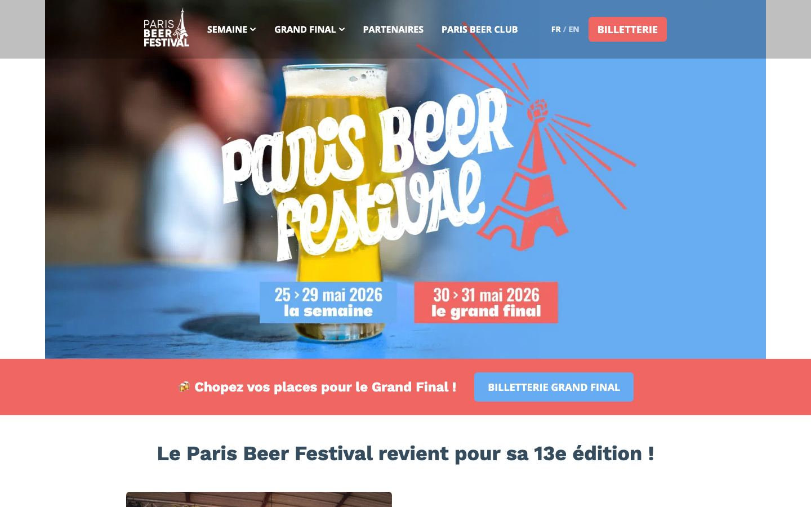
Paris Beer Festival
parisbeerfestival.frfestival bière · Paris
- Typo
- Lettrage manuscrit dessiné, Work Sans en texte.
- Couleur
- Bleu ciel, corail, jaune bière.
- À garder
- La référence la plus proche du public CCC : francophone, bière, convivial.
-
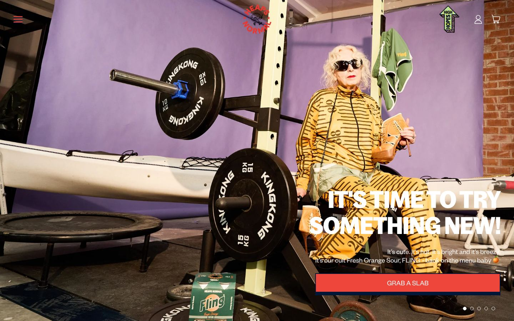
Heaps Normal
heapsnormal.combière sans alcool12 animations CSS
- Typo
- Bagoss Condensed pour les titres, Founders Grotesk pour le texte.
- Ton
- Décalé assumé : la photo fait la blague.
- À garder
- C'est exactement le registre « fun et décalé » demandé.
-
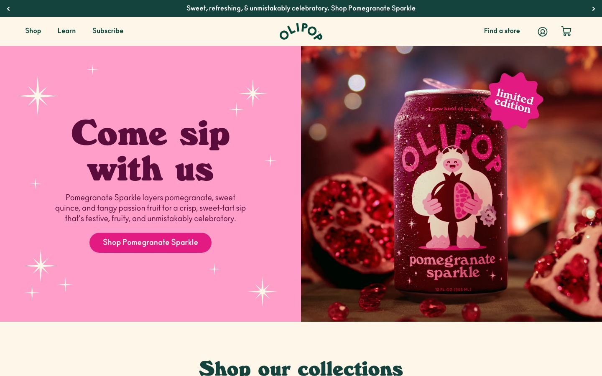
Olipop
drinkolipop.comsodaGSAPSwiper
- Typo
- Serif ronde très grasse (WindsorEF) et Ano.
- Couleur
- Rose bonbon, bordeaux, crème.
- À garder
- Le split texte / produit et les étincelles : festif mais propre.
-
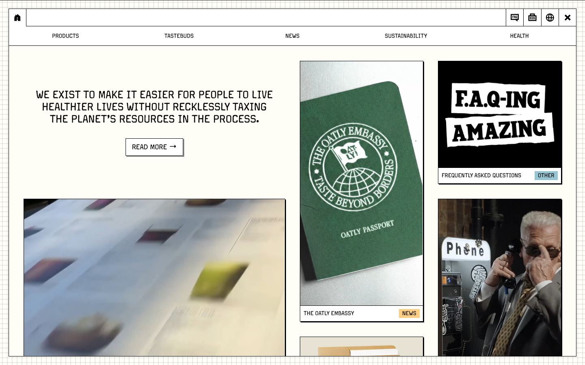
Oatly
oatly.comboissonton absurde
- Typo
- Margo Pro et capitales façon écriture à la main.
- Composition
- Papier quadrillé et cartes de contenu en bento.
- À garder
- Le ton : des titres qui font sourire (« F.A.Q-ing amazing »).
Piste AHappy Hour
La soirée au bar : nuit violette, néon rose, ambre de la bière et crème de la mousse. Un lettrage rond et gonflé, une pinte qui déborde, des capsules qui volent. C'est la piste « soirée » : chaude, brillante, un peu kitsch, assumée.
À partir de : poppi (mot unique en volume, bulles), Vibe (titre géant, CTA pilule), Rock en Seine (gonflable).
- Nuit#160B2E · fond
- Néon#FF3D9A · 5,69:1 avec la nuit
- Ambre#FFB21A · 10,38:1
- Mousse#FFF4DC · 17,14:1
- Glaçon#3EE8FF · accent rare
Caps!
Deux joueurs, deux bières, une capsule. Le gagnant finit sa bière.
Bagel Fat One (display, Google Fonts) · DM Sans 400–800 (texte)16 éditions · depuis 2012
Championnat
de Caps
Une capsule, deux bières, deux mètres d'écart. Le tournoi annuel du CCC : poules à 5 points, phase finale à 10.
Piste BKermesse
L'affiche de fête de village : papier crème, tomate, soleil, ciel et gazon, encre franche. Un script rétro gras, des fanions, un cadre de pictos et un badge qui tourne. C'est la piste « tournoi entre potes » : solaire, artisanale, très lisible.
À partir de : Beer & BBQ Festival (cadre de motifs, badge circulaire), Paris Beer Festival (lettrage), Mikkeller Beer Celebration (couleurs franches), Oatly (ton).
- Papier#FFF3DF · fond
- Tomate#FF4B2B · 5,62:1 avec l'encre
- Soleil#FFC928 · 12,18:1
- Ciel#2B5FE0 · 5,50:1 en blanc
- Gazon#1F7A46 · 5,34:1 en blanc
Santé !
Deux joueurs, deux bières, une capsule. Le gagnant finit sa bière.
Shrikhand (display, Google Fonts) · Archivo 400–900 (texte, déjà la police du CCC)Édition 2026 · poules en cours
Championnat de Caps
Le tournoi annuel du CCC depuis 2012. Shifumi pour commencer, une bière en poule, deux en finale, et le gagnant finit sa bière.
Et ensuite
- Choisir une piste (ou un mélange), et me transmettre vos propres références si vous en avez.
- Je décline la piste retenue en thème Origam (props d'abord), puis en accueil et Palmarès, où vidéo, 3D légère et animation JS sont autorisées.
- Les écrans denses (édition, fiche joueur) reprennent l'univers en CSS seul, avec un contraste AA vérifié.